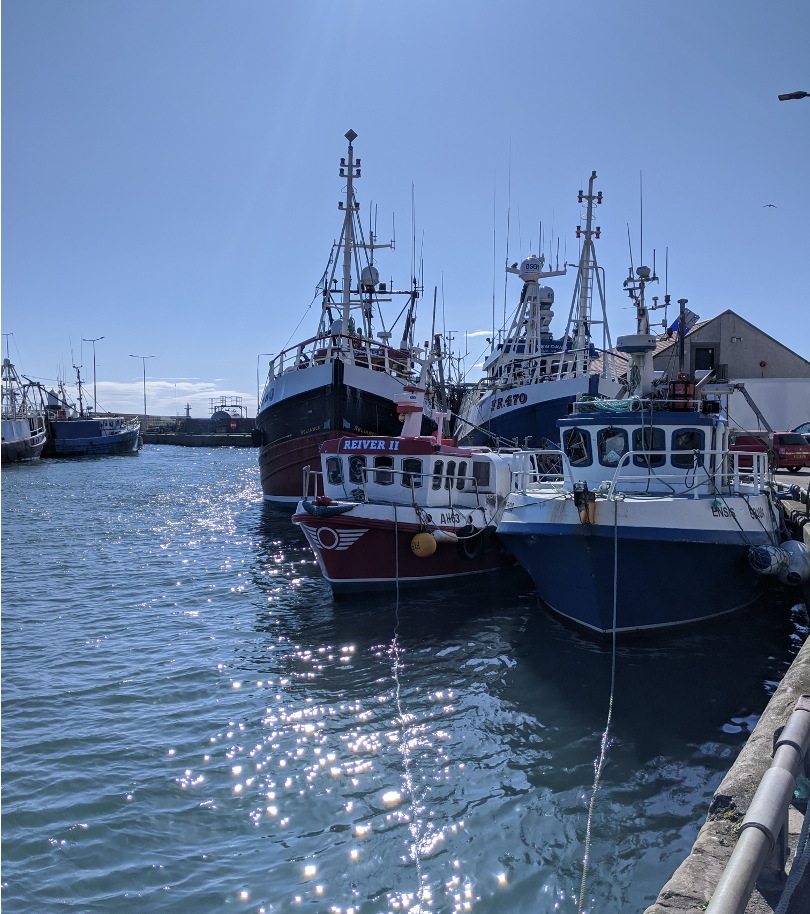
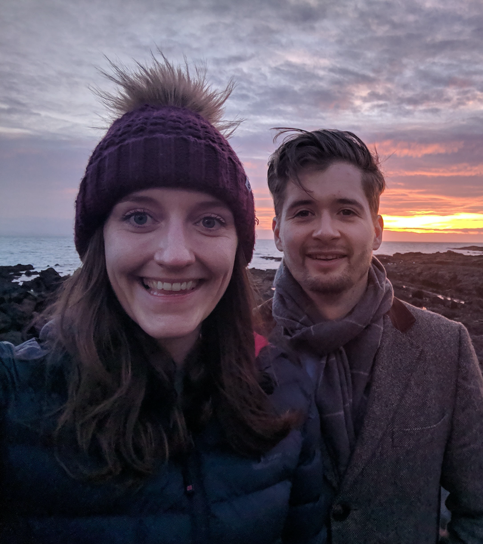

If we are lucky with the weather the ceremony will be held at Cellardyke harbour. If it's too chilly or rainy we will have the ceremony in Cellardyke town hall
Time: 2:00 pm
There is a short walk (10 mins) between the ceremony and evening doo so please bring sensible shoes and if the weather gods aren't with us a warm jacket.
Join us in Anstruther Town Hall for a bit of ceilidh dancing....don't worry we will have all the classic wedding hits too!
Time: 7:30 pm
Last orders will be at midnight. We will provide a bus to drop off at the nearby villages at 1am. Please see the Where to Stay page for details